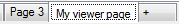

Click the ‘+’ tab  at the bottom or click the ‘New data viewer page’ button
at the bottom or click the ‘New data viewer page’ button  of the tool bar to create a new page in the data viewer.
of the tool bar to create a new page in the data viewer.
The new data viewer page is created.

A data viewer book can contain as many pages as you wish. Each single page appears as a tab of the multi-tab panel.

Right click on a page tab to get the viewer page contextual menu.

This contextual menu has four commands.
 Rename: Rename the active page of the data viewer.
Rename: Rename the active page of the data viewer.
 Close: Close the active page of the data viewer.
Close: Close the active page of the data viewer.
 Move left: Move the active page one step on the left.
Move left: Move the active page one step on the left.
 Move right: Move the active page one step on the right.
Move right: Move the active page one step on the right.
Click the ‘Rename’ menu to rename a page. A text box pops up.

Write the new name for the page in this text box.

Then press the ‘Enter’ key.

Data viewer pages can be individually saved and loaded through commands available in the tool bar. The entire data viewer book can be saved as well.
An entire section of the documentation is dedicated to the usage and configuration of the graphic window. Please check this section for more details.
Created with the Personal Edition of HelpNDoc: Free EPub producer